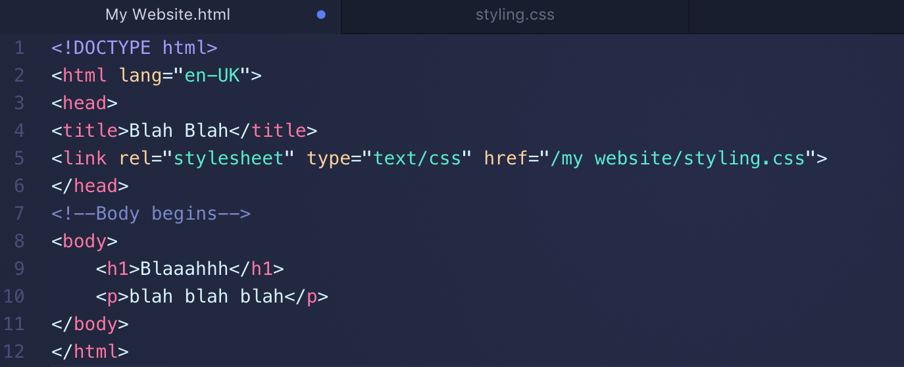
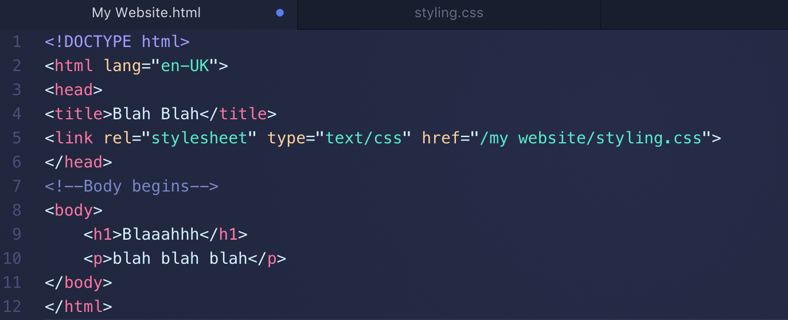
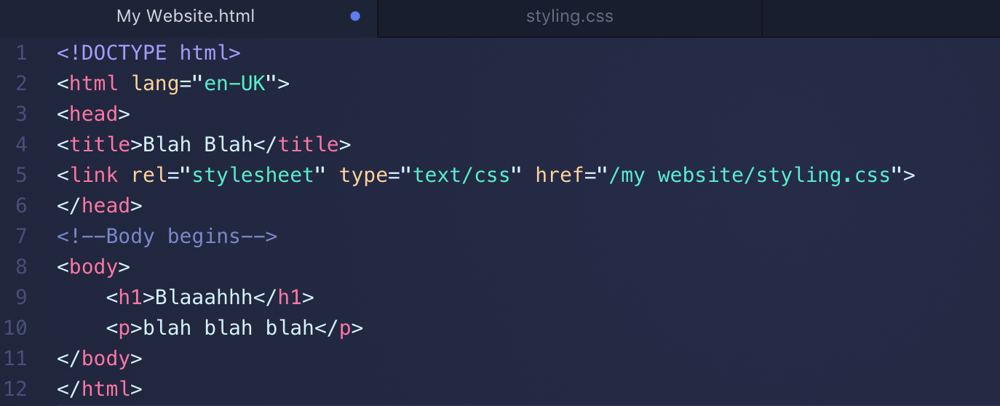

My name is Samuel Wlodawski and I grew up in Memphis, Tennessee. Growing up I always loved learning about technology and possessed a great eye for detail. As the years went by I soaked up knowledge of computers and how they function. This led me to persue a job as a developer. But this hasn't been easy. It has taken time and effort to reach my aspirations. Part of which include building various webpages and quality applications to gain the knowledge and experience necessary to pursue such an endeavor.
